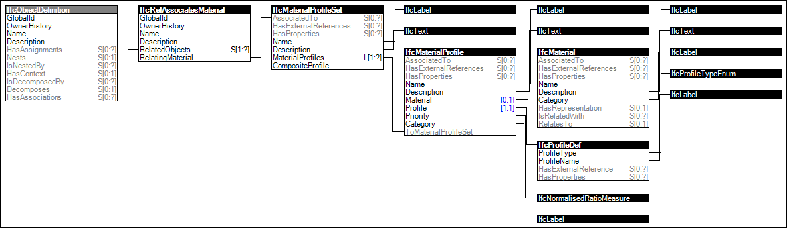

Link to this page
Link to this pageMaterial profile sets are associated with products or product types where materials are placed in cross-sections of specified dimensions following a path defined at occurrences of the type. Examples of such products are beams, columns, members, reinforcing, footings, piles, pipe segments, duct segments, and cable segments.
EXAMPLE Material profile sets can be provided at the IfcColumnType, defining the common material information for all occurrences of the same column type. It is then accessible by the inverse IsTypedBy relationship at IfcColumn pointing to IfcColumnType having the HasAssociations inverse relationship to IfcRelAssociatesMaterial with RelatingMaterial refering to the IfcMaterialProfileSet>. If an individual material association is provide at the IfcColumn and the IfcColumnType, then the material directly assigned to IfcColumn overrides the material assigned to IfcColumnType.
Figure 26 illustrates an instance diagram.
 |
Figure 26 — Material Profile Set |
Examples: